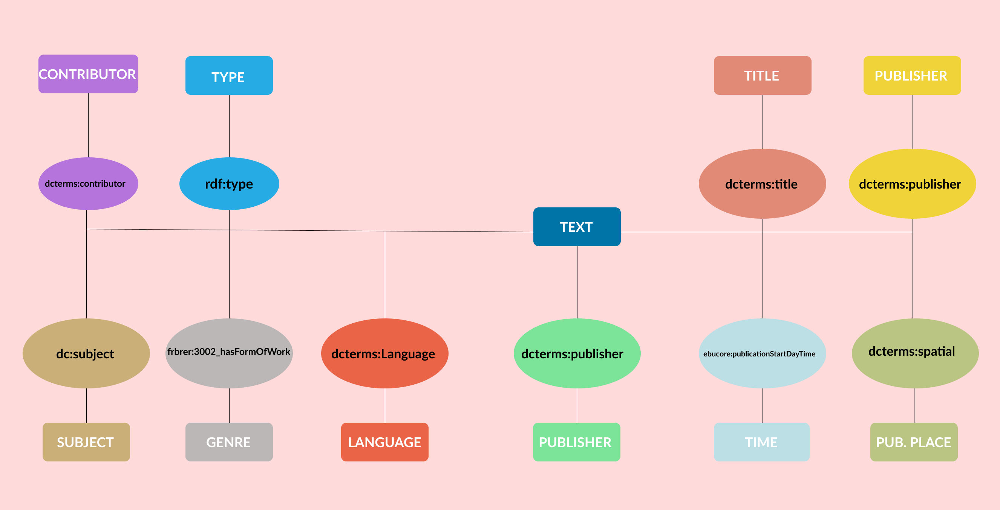

Hours of Conceptual Model
Hours Of Rdf teams call
Hard Working Digital Humanists
Items Selections

Luca Mercalli - Non c'è più tempo
Timothy Morton - Being Ecological
Paris 2015 - UN Climate Change Conference

Al Gore - An Unconvenient Truth
Anthropocene: The Human Epoch
Bill Gates - Come evitare un disastro
Wallace Broecker
Greta Thunberg
Ólafur Elíasson
E/R Climate Change
The E/R model (entity/relation model) is a way to map semantic relations among entities by organizing them into larger categories, which are derived from an interpretation of the central topic.
Global Warming Scenario
We created an E/R model to gather the items into four categories so as to show what kind of relations they have with each other. We decided to use Scientific Definition, Possible Intervention, Scientific Outreach, Artistic and Philosophical Representation as categories to better map the semantic correlations among our items. Moreover, these categories focus on different aspects of global warming: indeed, they are about how and by whom it was scientific defined, what can we do to stop it, how it is narrated and communicated to people both by an artistic and a scientific perspective.
Metadata Analysis
We have identified and studied the metadata standards used by our items' hosting Institutions to describe them: namely Wikidata, UniMarc, and Marc21. After separately analyzing the metadata standards, we proceeded to align them to ensure maximum interoperability. Moreover, we chose DublinCore (DC) and DCTerms as a reference standard to have a start point to perform the metadata alignment.
- Wikidata Standards is a free and open knowledge base that can be read and edited by both humans and machines. Wikidata acts as central storage for the structured data of its Wikimedia sister projects including Wikipedia, Wikivoyage, Wiktionary, Wikisource, and others.
- UniMarc is a bibliographic format that was first created and proposed by IFLA in 1977, with the title UNIMARC: Universal MARC format. A second version was published in 1980 followed, in 1983, by the UNIMARC Handbook. Finally, in 1987, the UNIMARC Manual was published. The third and current edition was published in 2008, in book format.
- Marc21 was designed to redefine the original MARC record format for the 21st century and to make it more accessible to the international community. MARC 21 has formats for the following five types of data: Bibliographic Format, Authority Format, Holdings Format, Community Format, and Classification Data Format. Currently, MARC 21 has been implemented successfully by The British Library, the European Institutions, and the major library institutions in the United States, and Canada.
Theoretical Model
To create the theoretical model, we came back to our data model to add a new fundamental level: the level of data interpretation.
We wanted a theoretical model able to describe our items and related information and also flexible enough to categorize new items that could be added by searching on the Web. Similarly to our E/R Model, in the theoretical model we organized our items in four different categories, according to different narrative practices that we have individuated:
1. Global warming as a scientific field with the work of the first climate scientist, Wallace Broecker, and the geological idea of the Anthropocene.
2. Possible interventions to tackle global warming such as the social movement Fridays For Future represented by Greta Thunberg, an entrepreneurial approach exemplified by Bill Gates and the international conference COP 21 that happened in Paris in 2015.
3. Philosophical and artistic representations of global warming, in the work of the American philosopher Timothy Morton, the Icelandic visual artist Ólafur Elíasson and in the distopian movie Snowpiercer, where climate change started a terrible Ice Age.
4. The scientific outreach about global warming. It is crucial to inform people and to simplify complex scientific ideas: the work of the climate scientist Luca Mercalli and the famous documentary made by the former US Vice President Al Gore An Unconvenient Truth are good examples of this.
From a more practical perspective, our items belong to four categories according to their intrinsic nature: text, multimedia, person and treaty (this category contains only one item, but we decided to implement it due to the nature of this object.).
To furtherly enhance the model, we described such items answering the following fundamental questions: Who?, Where?, When?, and What?
Texts
Come evitare un disastro
Being Ecological
Non c'è più tempo
Multimedia
Snowpiercer
An Unconvenient Truth
Anthropocene: The Human Epoch
Persons
Ólafur Elíasson - Icelandic Artist
Greta Thunberg - Swedish Activist
Wallace Broecker - American Scientist
Treaty
Paris 2015
UN Climate Change Conference
Artistic and Philosophical Representation
Scientific Definition
Scientific Outreach
Conceptual Model
By adopting an ontological approach, we moved to the formal representation. Indeed, we created a conceptual model by reusing existing ontologies and schemas such as RDF, DCTerms, ECRM, BF etc. The conceptual model is divided into four categories according to the item format and is expressed through a table and a graphical representation. The table features three columns (Question, Predicate, Origin) respectively representing a question to furtherly investigate the items, a label taken from the ontology and the name of the ontology used to describe that particular element.
Person
| Question | Property | Ontology |
|---|---|---|
| What is the type of entity? | rdf:type | RDF |
| What's their name? | wlo:name | wlo |
| When were they born? | locah:DateBirth | locah |
| What is the person’s citizenship? | person:citizenship | person |
| What is the person's occupation? | Core:occupation | Core Concepts Ontology |
| Where are their works exposed in? | Igdo:GalleryShop | Igdo |
| What is the person's work topic | bf:Topic | bf |
Text
| Question | Property | Ontology |
|---|---|---|
| What is the type of entity? | rdf:type | RDF |
| Who is the author? | dcterms:creator | DCMI Metadata Terms |
| What is the title? | dcterms:title | DCMI Metadata Terms |
| Who is the publisher? | dcterms:publisher | DCMI Metadata Terms |
| Which is the subject? | dc:subject | DCMI Metadata Terms |
| Who is the contributor? | dcterms:contributor | DCMI Metadata Terms |
| In which language was it published? | dcterms:language | DCMI Metadata Terms |
| In which language was it published? | dcterms:language | DCMI Metadata Terms |
| Where was it published? | dcterms:spatial | DCMI Metadata Terms |
| When was it published? | ebucore:publicationStartDayTime | EBU Core |
| What is the genre? | frbrer:3002_hasFormOfWork | FRBRER |
Multimedia
| Question | Property | Ontology |
|---|---|---|
| What is the type of entity? | rdf:type | RDF |
| Who is the contributor? | dcterms:contributor | DCMI Metadata Terms |
| What is the title? | dcterms:title | DCMI Metadata Terms |
| Who is the publisher? | schema:publisher | Schema.org |
| Which is the subject? | gold:subject | gold |
| In which language was it published? | gold:language | gold |
| Who is the director? | gndo:director | GND Ontology |
| Where was it published? | mrel:pup | mrel |
| When was it published? | rami:releaseDate | rami |
| What is the length? | dcterms:format | DCMI Metadata Terms |
| What is the format? | dbpedia-owl:format | dbpedia-owl |
Treaty
| Question | Property | Ontology |
|---|---|---|
| What is the type of entity? | rdf:type | RDF |
| When was it signed? | bf:legalDate | bf |
| Where was it signed? | place:City | place |
| Who signed it? | rdag1:signatoryToATreatyEtcWork | rdag1 |
| What is the goal? | dul:Goal | dul |